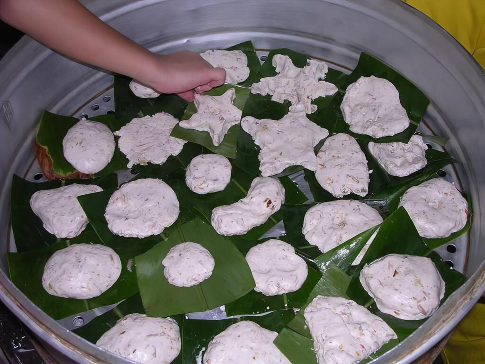
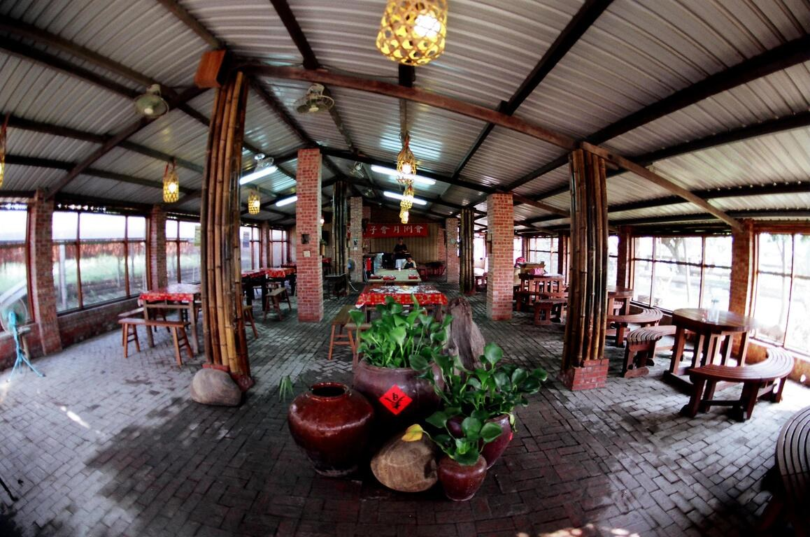

把米食的香氣，從手作帶到餐桌。

以農村文化與食農教育為主軸，將米食、農事與午餐串在一起，適合家族活動及戶外教學。
割稻飯風味餐呈現農村古早味；農遊協會介紹高麗菜飯、大灶焢肉、花椰菜乾等料理，實際依預約方案供應。
基本行程以焢窯餐食套裝為基本方案，包含午餐；實際食材、其他活動與時長依農場預約確認。

 餓，林時起意！ERLIN SLOW TRAVEL
餓，林時起意！ERLIN SLOW TRAVEL